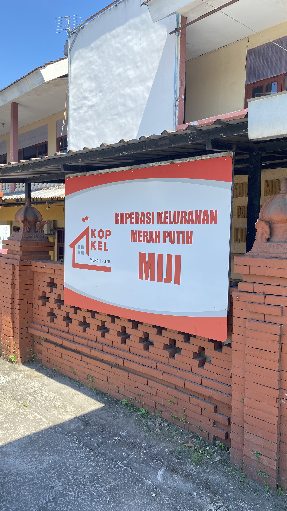

KKMP Miji hadir di Kelurahan Miji sebagai koperasi yang memberikan akses simpan pinjam modal usaha, distribusi sembako harga terjangkau, dan pendampingan UMKM — langsung untuk warga, tanpa birokrasi rumit.

KKMP Miji (Koperasi Kelurahan Merah Putih) lahir dari semangat gotong royong warga Kelurahan Miji untuk bersama-sama membangun perekonomian lokal yang mandiri dan berdaulat. Di bawah kepemimpinan Haris Saktiyanto selaku Ketua, KKMP Miji terus tumbuh menjadi pilar ekonomi kerakyatan yang nyata di Kota Mojokerto.
Menjadi koperasi kelurahan terdepan yang mendorong kemandirian ekonomi rakyat, swasembada usaha, dan kesejahteraan seluruh warga Miji selaras cita-cita nasional.
Memberdayakan anggota melalui simpan pinjam, pengembangan UMKM, dan kemitraan usaha yang adil demi mewujudkan Indonesia Emas 2045.
Gotong royong, transparansi, keadilan, dan keberpihakan pada anggota menjadi fondasi setiap langkah KKMP Miji.
Seluruh program KKMP Miji berlandaskan pada 8 Cita-Cita (Asta Cita) Presiden Prabowo Subianto sebagai kompas gerak kami.
Membangun fondasi bangsa yang kuat berlandaskan Pancasila, UUD 1945, dan semangat kebhinekaan.
Memastikan kedaulatan negara terjaga dan rakyat hidup dalam kondisi aman dan damai.
Mewujudkan kemandirian nasional dalam pemenuhan kebutuhan dasar demi ketahanan rakyat.
Investasi pada pendidikan, kesehatan, dan karakter anak bangsa demi generasi emas 2045.
Mendorong nilai tambah sumber daya alam dalam negeri agar manfaatnya dirasakan rakyat.
Pemerataan pembangunan hingga ke daerah tertinggal, terdepan, dan terluar.
Mewujudkan sistem hukum dan ekonomi yang adil serta berpihak pada kepentingan rakyat banyak.
Membangun tata kelola pemerintahan yang bersih, transparan, dan berorientasi pada pelayanan.
Kami merancang program yang solutif, terukur, dan berdampak langsung bagi anggota koperasi dan warga Kelurahan Miji, Kota Mojokerto.
Layanan simpan pinjam untuk membantu anggota mengakses modal usaha dengan bunga ringan dan proses yang mudah.
Pelajari Lebih LanjutPengelolaan warung sembako koperasi sebagai pusat distribusi kebutuhan pokok warga dengan harga terjangkau dan stabil.
Pelajari Lebih LanjutPendampingan dan permodalan bagi pelaku UMKM anggota koperasi, termasuk pelatihan manajemen usaha dan pemasaran digital.
Pelajari Lebih LanjutInisiatif ketahanan pangan lokal melalui distribusi sembako murah, budidaya urban farming, dan pengelolaan bank benih komunitas.
Pelajari Lebih LanjutBergabunglah dan rasakan manfaat nyata koperasi bersama warga Kelurahan Miji.